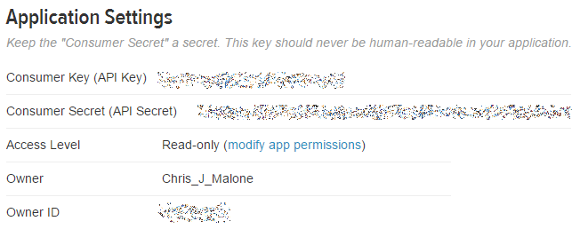

4.8. Twitter/Text Mining¶
*Setting up an API, i.e. Twitter Side*
Twitter uses an Application Programming Interface (API) that allows developers to pull Twitter data.
To setup an API, go to http://apps.twitter.com, sign in using an existing Twitter account.

Once logged in, select Create New App

Next, specify the requested information to create a new application.

DSCI210_TwitterPull is the newly created application.

After a successful application has been setup, the following information is required to access Twitter’s data API from R.
- Consumer Key
- Consumer Secret
- Access Token
- Access Token Secret
These information can be obtained under the Keys and Access Tokens tab on the Twitter site.
|  |
Working with Twitter Pulls in R
The following packages/libraries will be used to analyze Twitter data in R.
library(twitteR)
library(RCurl)
library(tm)
library(wordcloud)
The following information is obtained from the DSCI210_TwitterPull application on Twitter side.
#Specified from Twitter Account - DSCI_210 is app name
consumer_key <- “<consumer_key>“
consumer_secert <- “<consumer_secert>“
token_key <- “<token_key>“
token_secert <- “<token_secert>“
Setting up the OAUTH connection in R.
Note: OAUTH is an open protocol to allow secure authorization in a simple and standard method from web, mobile and desktop applications.
#Setting up OAUTH in R
setup_twitter_oauth(consumer_key,consumer_secert,token_key,token_secert)

Getting a Twitter pull
#Gettting a pull on recent Ecuador Earthquake
pull <- searchTwitter(“#EcuadorEarthquake”, n=1000, lang=”en”)
The object returned by the searchTwitter() function is a list.
#Checking to see if object is indeed a list
is.list(pull)
This (somewhat unstructured) list can be converted a standard data.frame using the following.
#Converting list to dataframe
df <- do.call(“rbind”, lapply(pull, as.data.frame))
View(df)
Writing data.frame to comma delimited file
#The write.csv() function to write this data.frame into a *.csv file
write.csv(df,file=<director/filename>”)
A summary of screenname
Get # posts by screenName
table(df$screenName)
#Plotting results
plot(table(df$screenName))
#adding a horizontal line at 3
abline(h=3)

#Idenitfy screenNames with more than 3 counts
which(table(df$screenName)>3)

Gain an understating the of the variable types in this data.frame.
#Getting the structure of our data.frame
str(df)

#Plotting twitter pull across days
plot(table(as.Date(df$created)))
#The following can be used to pull hour off created variable
as.POSIXlt(df$created)$hour
#Next, table/plot outcome
plot(table(as.POSIXlt(df$created)$hour))

*Text Mining Procedures*
#using the tm library for text mining
myCorpus <- Corpus(VectorSource(df$text))
#Clean up text using the tm_map() function
myCorpus <- tm_map(myCorpus, tolower)
myCorpus <- tm_map(myCorpus, removePunctuation)
myCorpus <- tm_map(myCorpus, removeNumbers)
Necessary to get rid of common English words. The stopwords() function can be used to accomplish this in R.
#Getting rid of common english words
myStopwords <- c(stopwords(‘english’))
myCorpus <- tm_map(myCorpus, removeWords, myStopwords)
The following is used to convert the Corpus object into a TermDocumentMatrix which is then converted to a matrix, and eventually a data.frame.
myDtm <- TermDocumentMatrix(myCorpus, control = list(minWordLength = 1))
m <- as.matrix(myDtm)
v <- sort(rowSums(m), decreasing=TRUE)
myNames <- names(v)
#Creating data.frame for wordcloud
d <- data.frame(word=myNames, freq=v)
wordcloud(d$word, d$freq, min.freq=3)
A Wordcloud of text from Twitter pull.

{kind=link}
{kind=link}
{kind=link}
{kind=link}
{kind=link}
The wordcloud() function allows specification of a minimum frequency when plotting. This can be used to identify the most common words.
{kind=link}
*Task*
Obtain a Twitter pull on a topic of your choice. Complete the following for your data.
- Write the Twitter data into a CSV file.
- Does the number of tweets vary much over day? If some days are more tweets than others, why might this be the case?
- Doe the number of tweets vary much over time of day?
- Create a reasonable workcloud for your twitter date. If necessary, remove any over-represented words by modifying the myStopwords line above in the code.